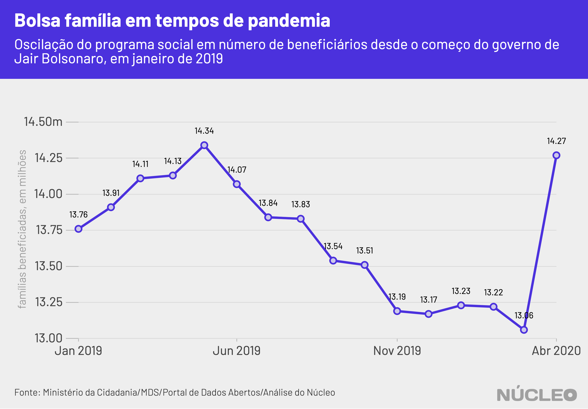

Em meio à pandemia de coronavírus e de políticas de isolamento social que paralisaram boa parte da economia nacional, o governo do presidente Jair Bolsonaro interrompeu o enxugamento do Bolsa Família, e o número de famílias beneficiadas cresceu 9,3% em abril sobre março, chegando a 14,27 milhões.
A alta no total de beneficiários faz parte das ações do governo federal para ampliar assistência às pessoas mais carentes e vulneráveis, como resposta à crise econômica causada pela epidemia.
No entanto, o aumento acontece em um momento excepcional, e é precedido de repetidas quedas nos últimos 12 meses. Desde junho de 2019 o número de famílias no Bolsa Família não ficava acima de 14 milhões.

É importante porque…
-
O Bolsa Família é o maior programa social do Brasil, e parte essencial de políticas do governo para mitigar os efeitos econômicos da epidemia de coronavírus
-
Em momento de isolamento social para combater a COVID-19, em que muitas pessoas não estão saindo para trabalhar, as famílias recipientes precisam de renda mais do que nunca
O ministro da Cidadania, Onyx Lorenzoni, já havia sinalizado no fim de março que o número de famílias beneficiadas ficaria acima do patamar de 14 milhões.
Mesmo assim, o dado destoa do enxugamento resultante de políticas de ajuste fiscal da equipe econômica liderada por Paulo Guedes, como já mostrou o Núcleo, e escancara a urgência de auxílios emergenciais para combater a crise financeira e o desemprego durante a epidemia, algo apoiado até pelos economistas mais liberais.
Assim, o número de famílias beneficiadas, que caiu em nove dos últimos 12 meses, chegando a 13,06 milhões no menor nível, subiu para 14,27 milhões.
| mês | famílias beneficiadas | variação (%) sobre mês anterior |
|---|---|---|
| 01/2019 | 13.760.886 | -2,7 |
| 02/2019 | 13.914.330 | 1,12 |
| 03/2019 | 14.105.240 | 1,37 |
| 04/2019 | 14.134.323 | 0,21 |
| 05/2019 | 14.339.058 | 1,45 |
| 06/2019 | 14.072.368 | -1,86 |
| 07/2019 | 13.841.302 | -1,64 |
| 08/2019 | 13.826.716 | -0,11 |
| 09/2019 | 13.537.137 | -2,09 |
| 10/2019 | 13.505.758 | -0,23 |
| 11/2019 | 13.189.567 | -2,34 |
| 12/2019 | 13.170.607 | -0,14 |
| 01/2020 | 13.228.015 | 0,44 |
| 02/2020 | 13.216.880 | -0,08 |
| 03/2020 | 13.058.228 | -1,2 |
| 04/2020 | 14.274.274 | 9,31 |
O Núcleo consultou a API oficial do Bolsa Família oficial do Ministério da Cidadania nesta sexta-feira, 1º de maio, e os dados de abril já constavam lá - mas ainda não no site.
Reportagem do UOL no fim de abril mostrou que o governo havia usado apenas uma pequena parte do montante destinado ao programa social, segundo dados do Tesouro Nacional.

METODOLOGIA
O Núcleo baseou todas as suas análises em dados fornecidos diretamente pelo Ministério da Cidadania, sob a rubrica do Ministério do Desenvolvimento Social. Essas informações foram obtidas diretamente da API tal como disponibilizada no Portal de Dados Abertos do governo federal, que contém valores e números de famílias agrupados por município.
É possível encontrar dados do Bolsa Família também no Portal da Transparência do governo federal.
A extração dos dados e as análises foram feitas utilizando a linguagem de programação R, e os códigos podem ser encontrados integralmente neste link.
Por termos feito apenas uma agregação dos dados oficiais disponibilizados, sem juízo de valor, o Núcleo não entrou em contato com o governo para pedir esclarecimentos. Se governo, organizações ou pessoas desejarem enviar algum esclarecimento acerca desses dados, favor contatar os editores no email nucleo@voltdata.info.
Essa reportagem pode ser atualizada caso os dados sejam atualizados.